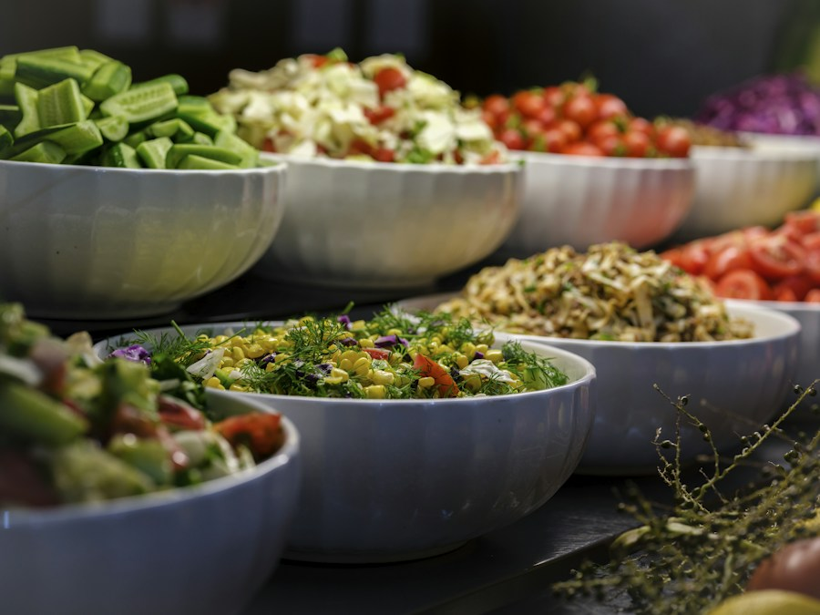

Enjoy a meal with us. Ask our team about ingredients and dietary options.
Starters
-

Photo by engin akyurt on Unsplash Garden Salad
Seasonal greens, crisp vegetables, and house dressing.
Soup of the Day
A comforting daily selection served fresh.
Main Plates
-

Photo by HaJunkiyada, CC BY-SA 4.0 Grilled Chicken
Grilled chicken served with vegetables and a side of your choice.
-

Photo by Thamizhpparithi Maari, CC BY-SA 4.0 Classic Veggie Burger
A hearty vegetable patty with fresh toppings.
Friends Zone Special
A house favorite served with a side of your choice.


Ethiopian Delicacies
-

Photo by Edsel Little, CC BY-SA 2.0 Doro Wat
Spiced chicken stew traditionally served with injera.
-

Photo by Omnipc, CC BY 4.0 Misir Wat
Slow-cooked red lentils seasoned with warm spices, served with injera.


Eritrean Delicacies
-

Photo by LittleT889, CC BY-SA 4.0 Zigni
Rich, spiced beef stew served with injera.
Tsebhi Derho
Traditional Eritrean chicken stew served with injera.

Sudanese Delicacies
-
.jpg?width=800)
Photo by Abdullah Geelah, CC BY-SA 3.0 Ful Medames
Slow-cooked fava beans served with fresh accompaniments.
-

Kisra preparation by Mohamed Elfatih Hamadien, CC BY-SA 4.0 Kisra with Mullah
Fermented sorghum flatbread served with a savory Sudanese stew.
.jpg){kind=link}

Kenyan Delicacies
-

Photo by Safaritravelplus, CC0 1.0 Nyama Choma
Grilled meat served with kachumbari.
-

Photo by Paresh Jai, CC BY 2.0 Ugali and Sukuma Wiki
Kenyan maize meal served with seasoned collard greens.
-

Photo by Cmwaura, CC BY-SA 4.0 Kenyan Pilau
Fragrant spiced rice cooked with meat.


Desserts
Today's Dessert
Ask your server about today's sweet selection.
Drinks
- Soft drinks
- Juices
- Tea and coffee
Traditional drink selections vary by availability. Alcoholic options are marked.
Ethiopian Drinks
-
Photo by Denis Żak on Unsplash Buna
Ethiopian coffee, traditionally roasted and served as part of a coffee ceremony.
Tej (alcoholic)
Traditional honey wine.
Tella (alcoholic)
Traditional fermented grain beer.
Borde
A traditional fermented cereal drink.
Eritrean Drinks
Eritrean Coffee
Freshly roasted coffee served in the traditional style.
Suwa (alcoholic)
Traditional fermented grain beer.
Mies (alcoholic)
Honey wine, also known as tej.
Sudanese Drinks
Karkade
Hibiscus tea served hot or chilled.
Aradeeb
Refreshing tamarind drink.
Jellab
Chilled drink made with dates or raisins.
Sudanese Tea
Black tea, often served with spices.
Hulu-mur
A traditional spiced sorghum drink, especially popular during Ramadan.
Kenyan Drinks
Kenyan Chai
Black tea brewed with milk and warming spices.
Madafu
Fresh young coconut water.
Mursik
Traditional fermented milk drink.
Busaa (alcoholic)
Traditional fermented maize beverage.
Muratina (alcoholic)
Traditional fermented honey beverage.